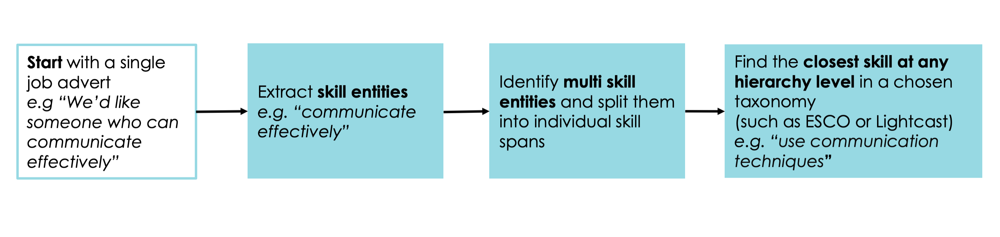

Pipeline summary#

High level, the overall pipeline includes:
Named Entity Recognition (NER) model to extract skill, multi skill or experience entities in job adverts;
Support Vector Machine (SVM) model to predict whether the skill entity is a skill or multiskill; if multiskill, apply rules to split multiskills into individual skill entities;
Embed all entities (skill and multi skill entities) and taxonomy skills using huggingface’s sentence-transformers/all-MiniLM-L6-v2 pre-trained model;
Map extracted skills (skill and multi skill) onto taxonomy skills using cosine similarity of embeddings.
For further information or feedback please contact Liz Gallagher, India Kerle or Cath Sleeman.
Intended Use#
Extract skills from online job adverts and match extracted skills to a user’s skill taxonomy of choice, such as the European Commission’s European Skills, Competences, and Occupations (ESCO) or Lightcast’s Open Skills.
Intended users include researchers in labour statistics or related government bodies.
Out of Scope Uses#
Out of scope is extracting and matching skills from job adverts in non-English languages; extracting and matching skills from texts other than job adverts; drawing conclusions on new, unidentified skills.
Skills extracted should not be used to determine skill demand without expert steer and input nor should be used for any discriminatory hiring practices.
Metrics#
There is no exact way to evaluate how well our pipeline works; however we have several proxies to better understand how our approach compares.
Comparison 1 - Top skill groups per occupation comparison to ESCO essential skill groups per occupation#
The ESCO dataset also includes information on the essential skills per occupation. We compare ESCO’s essential skill groups per occupation with the top ESCO-mapped skill groups per occupation. We identify top skills per occupation by:
Identifying occupations for which we have at least 100 job adverts;
Identify skills extracted at ONLY the skill level;
Identify a top skill threshold by calculating the 75 percentile % of skills counts for a given occupation
Identify the % of top ESCO-mapped skill groups in ESCO’s essential skill groups per occupation
At a high level, we find that:
58 occupations with 100 or more job adverts were found in both ESCO and a sample of deduplicated 100,000 job adverts
The average # of adverts per occupation is 345.54
We extract essential ESCO skills, transversal skills and additional skills
On average, 94.5 percent of essential ESCO skill groups were also in the top skill groups extracted per occupation
The median percent of essential ESCO skills per occupation that were extracted from our algorithm is 97.84.
Comparison 2 - Degree of overlap between Lightcast’s extracted skills and our Lightcast skills#
We compare extracted Lightcast skills from Lightcasts’ Open Skills algorithm and our current approach from 99 job adverts, with a minimum cosine similarity threshold between an extracted skill and taxonomy skill set to 0 to guarantee we only match at the skill level
We found:
We extract an average of 10.22 skills per job advert while Lightcast’s Open Skills algorithm extracts an average of 6.42 skills per job advert
There no overlap for 40% of job adverts between the two approaches
Of the job adverts where there is overlap, on average, 39.3% of extracted Lightcast skills are present in our current approach. The median percentage is 33.3%.
Qualitatively, there are a number of limitations to the degree of overlap approach for comparison:
The two skill lists may contain very similar skills i.e. Financial Accounting vs. Finance but will be considered different as a result
For exact comparison, we set the cosine similarity threshold to 0 to guarantee extracted skill-level skills but would otherwise not do so. This allows for inappropriate skill matches i.e. ‘Eye Examination’ for a supply chain role
Lightcast’s algorithm may not be a single source of truth and it also extracts inappropriate skill matches i.e. ‘Flooring’ for a care assistant role
Evaluation 1 - Manual judgement of false positive rate#
We looked at the ESCO-mapped skills extracted from a random sample of 64 job adverts, and manually judged how many skills shouldn’t have been extracted from the job advert i.e. the false positives. We also performed this analysis when looking at the skills extracted from 22 job adverts using Lightcast’s Skills Extractor API.
Our results showed on average 27% of the skills extracted from a job advert are false positives.
For Lightcast, on average 12% of the skills extracted from a job advert are false positives.
Evaluation 2 - Manual judgement of skills extraction and mapping quality#
We manually tagged a random sample of skills extracted from job adverts, with whether we thought they were bad, OK or excellent skill entities, and whether we thought they had bad, OK or excellent matches to ESCO skills.
We felt that out of 183 skill entities 73% were excellent entities, 19% were OK and 8% were bad.
172 out of 183 skill entities were matched to ESCO skills.
Of the 172 matched skill entities we felt 53% were excellently matched, 30% were OK and 17% were bad.
Skill entity quality |
ESCO match quality |
count |
|---|---|---|
Bad |
Bad |
9 |
Bad |
OK |
1 |
OK |
Bad |
|
OK |
OK |
16 |
OK |
Excellent |
7 |
Excellent |
Bad |
11 |
Excellent |
OK |
35 |
Excellent |
Excellent |
83 |
87% of the matches were to either an individual skill or the lowest level of the skills taxonomy (level 3).
The match quality is at its best when the skill entity is matched to an individual ESCO skill.
Taxonomy level mapped to |
Number in sample |
Average match quality score (0-bad, 1-OK, 2-excellent) |
|---|---|---|
Skill |
99 |
1.71 |
Skill hierarchy level 3 |
51 |
0.90 |
Attitudes hierarchy |
8 |
1.63 |
Skill hierarchy level 2 |
6 |
0.33 |
Knoweldge hierarchy |
6 |
0.17 |
Transversal hierarchy |
1 |
1.00 |